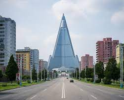

COREA DEL NORTE

Según la agencia de viajes norcoreana Young Pioneer Tours, viajar a este país asiático no solo es seguro, sino que es “probablemente uno de los lugares más seguros del mundo para visitar”. Eso sí, siempre que se cumpla con las leyes y regulaciones del país, ya que en el caso contrario “las consecuencias pueden ser graves”. Una frase, sin duda, contraductoria.
AFGANISTAN

Se subraya enfáticamente a todos los viajeros mexicanos evitar visitar Afganistán por cualquier motivo no esencial, pues no hay garantías de seguridad y existe un riesgo generalizado de terrorismo y violencia sectaria; debido a la naturaleza del mismo, se recomienda extremar precauciones en todo momento.
CHERNOBYL

Hoy, la cantidad de turistas que buscan entrar a la Zona de Exclusión de Chernobyl, una zona de tierra contaminada de unos 30 kilómetros de radio que rodea a la planta de energía, da trabajo a varias empresas turísticas.